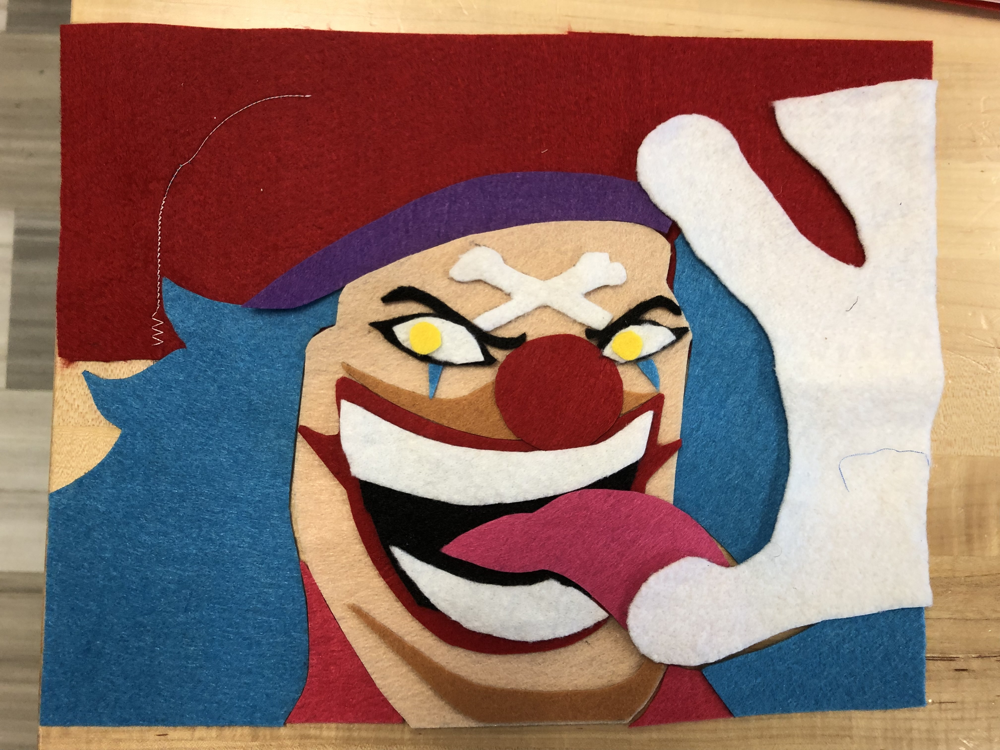
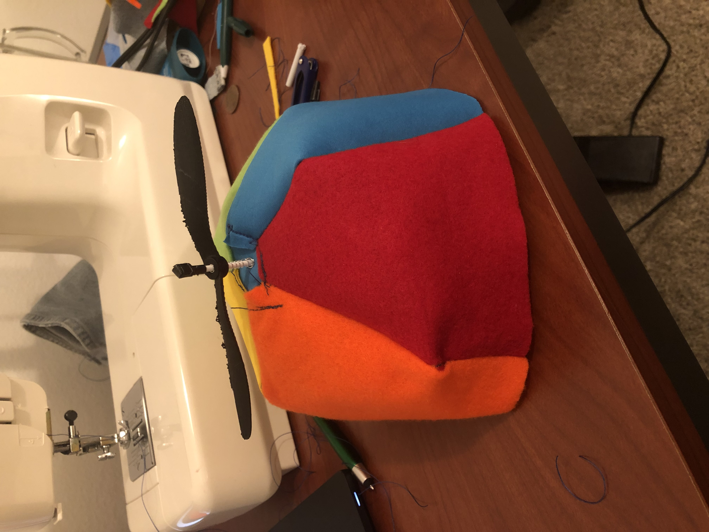
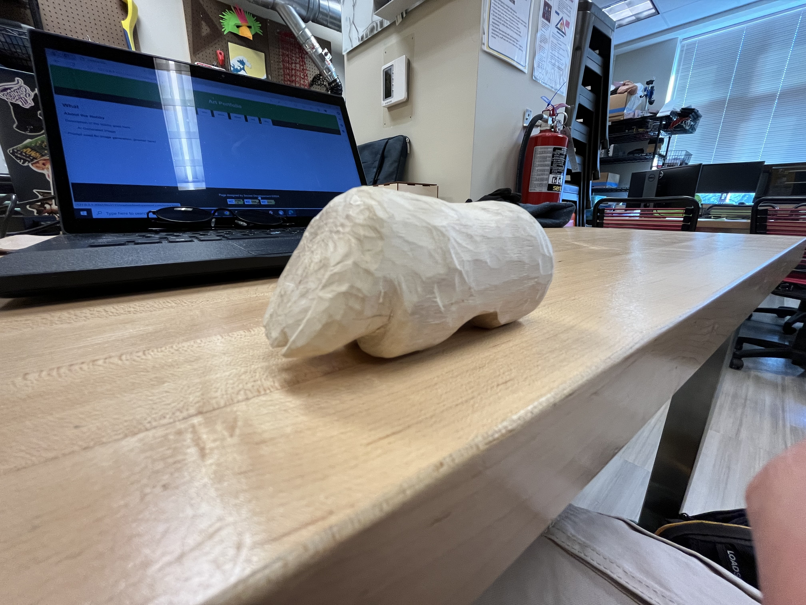
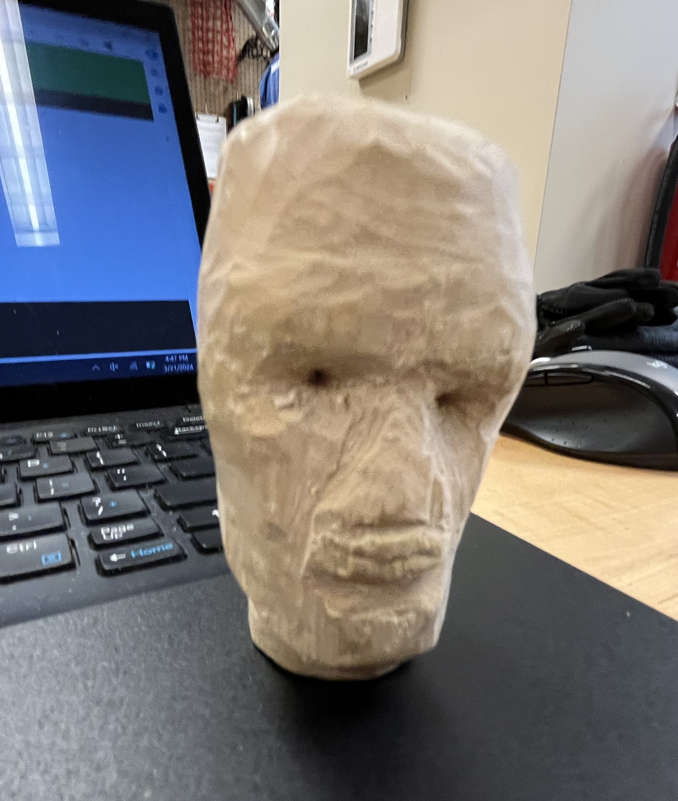
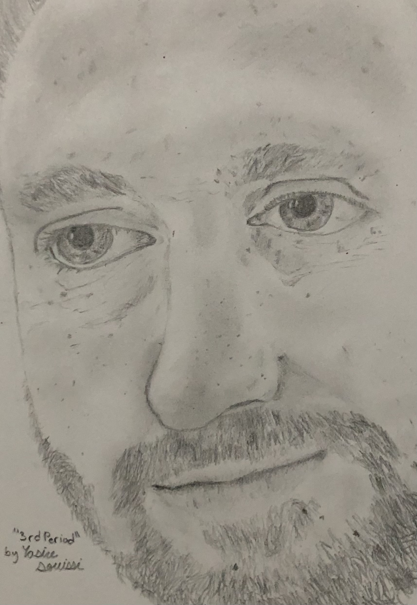
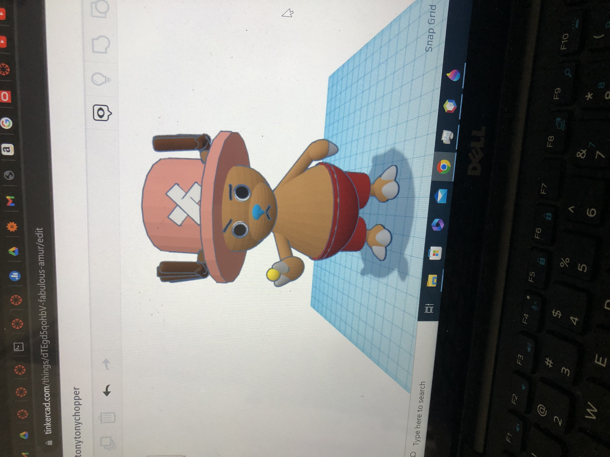
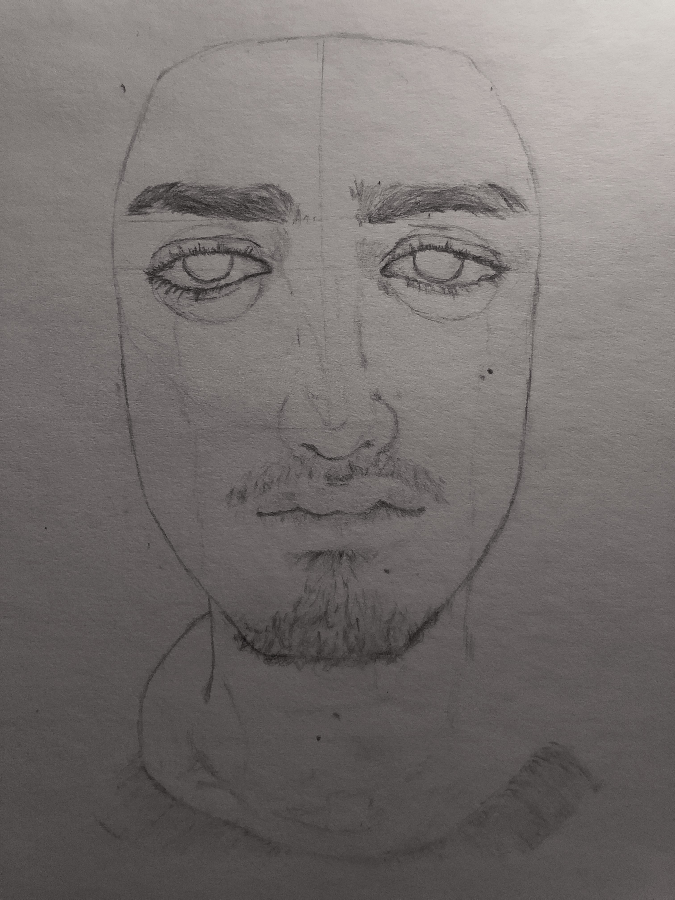
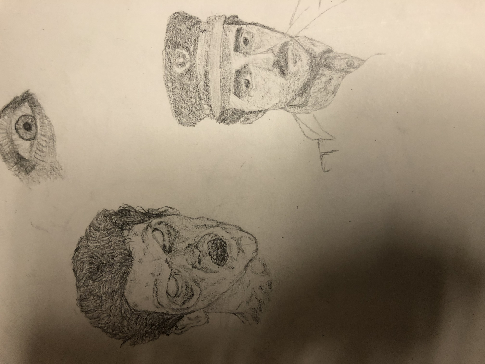
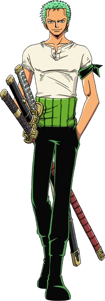
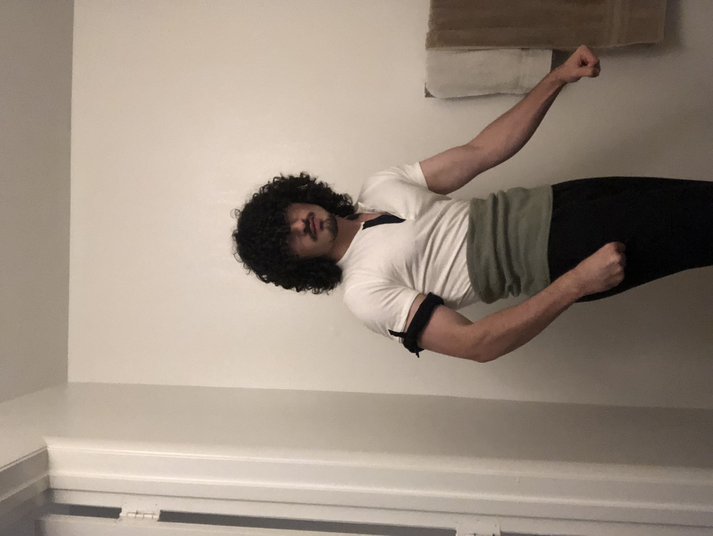

To me, Visual Arts is any kind of physical art thats made to be displayed.
I have to believe this because the variety of art I create is so vastly different which you'll see as you explore my page!
I have been making art as long as I can remember, whether it be playing with blocks to build the tallest sturcture I coule or drawing a metric ton of frogs.
It's something that has evolved right along side me as I grew up.
Art was a comfort and while I wasnt always drawing, it was good to know that I always had something to come back to.
below will be just a taste of what I'm capable of, just some practices I did that I'm particularly proud of for one reason or another.
This was a cat from spiderman across the spiderverse that I drew.
Since I made all this art myself basically all of this was used in order to improve my skill.
There is a drawing of the statue of david by michealangelo, I did not put a leaf.
Who
Who is the subject of my art?
Usually I choose characters from live action and animated media to recreate in my art as it serves as quick inspiration, as well as a jumping off point.
The series that has served as a major inspiration recently has been one piece, a series that was brought to us by the talented Echiro Oda.
I also like this website that has a ton of film grabs that I can use to study how the face and body move, as weell as appreciate some interesting cinematogrophy.

Buggy D. Clown from one piece, the carrier of zebeks will and the strongest character in his respective universe, made out of felt.
I created this felt poster of Buggy in the CCI Makerspace and it took me a solid 4 hours.
Below is some of the other project I've made out of cloth.
Artwork
Medium
Description
Sowed
A sleeping cap reminscent of misers like Scrooge from the Christmas Carol.

Sowed
A spinning propeller hat reminscent of a Willy Wonka choclate factory.
Sowed
A poster of Jinbe from the Strawhat crew, the helmsman and first son of the sea, from the comic One piece.
When
Best Times for Art
Art is a truly versatile medium for expression in the sense that it can really be done whenever you have the time.
This can be to its detrement though especially in my case where I often get to busy to work on a piece for longer than a couple of hours.
Of course the reasons for this are largely becasue I have a wide variety of intrests and passions so sometimes art can take a backseat.
Regardless though I have still put an insane amount of time into this hobby of mine.

A Wooly Mammoth carved from wood.
This Wooly Mammoth that I have made is still a work in progress but I have been working on it since November of 2023 so it has been a minute.
Below you'll see some other art of mine and the time it took for me to make.
Artwork
Time Spent
Description
30 Minutes
This was a self portrait of my mental state after finishing the second part of the JavaScript freeCodeCamp course.

3 Weeks
This was an attempt to visualize a 3d head out of wood reminscent of west african sculptures.
2 Hours
A 3d model of Mahoraga from Jujuitsu Kaisen, my favorite character design.

5 Hours
A drawing of my choir teacher I did to celebrate his acceptance to a masters program.
Where
Best Locations for Art
The thing I love about art is that it can be done basically anywhere, on a plane? Draw. Outside? Whittle. Have time between classes? 3d model.
Art can be as dynamic as a header or footer, heck even css is an artform.
You might notice, however, that it is a very long time sink and can be impeded in many ways as well.
Whether it be some heavy boughts of art block or carpel tunnel or even a sprain, art persists.
On this page you'll be able to see what kind of art I've done and more importantly the places that I have done them.

Chopper from One Piece, the greatest reindeer of all.
The 3d model you see above was a quick little model I created using tinkercad and while it wasnt the most efficient way to make it, it felt very satisfying, and more than anything fulfilling.
I am eager to learn Blender because of its versatility and convenience, allowing me to create stunning 3D models and animations wherever I am. With Blender's intuitive interface and powerful features, I can unleash my creativity and bring my ideas to life on the go.
Whether I'm traveling, waiting for an appointment, or simply relaxing at home, Blender enables me to explore my imagination and develop captivating visual content effortlessly.
Its accessibility ensures that I can continue honing my skills and producing high-quality artwork whenever inspiration strikes, making it the perfect tool for my creative journey.
How
How I Got Started
My artistic journey began with simple sketches of frogs, drawn with fascination and curiosity. As I explored the intricacies of their forms and movements, my passion for drawing blossomed. With each stroke of the pencil, I delved deeper into the art of capturing nature's beauty on paper.
Over time, my dedication to practice and experimentation paved the way for remarkable growth in my artistic abilities.
From the humble beginnings of frog sketches, I gradually honed my skills, studying anatomy, light, and shadow to achieve greater realism in my artwork.
Through perseverance and countless hours of practice, I've transcended the realm of amphibian drawings to master the art of depicting human faces with striking accuracy.
Today, I take pride in my journey, recognizing that every frog sketch was a stepping stone toward achieving my dream of creating lifelike portraits that resonate with viewers on a profound level.
Dr. Jekyll from Dr. Jekyll and Mr. Hyde
This was my most recent peice that I'm still working on but it demonstrates the understanding of shading that ive developed as I've aged.
Below are some more images and when I made them.
Artwork
Date Completed
Description

April 2022
This was a self portrait that I never finished because I despise drawing hair.

May 2022
This was an attempt to draw on a smaller scale while maintaing details however it was not the strongest.
October 2022
A character from get out.
October 2022
Pearl from the move Pearl.
March 2023
Tangerine from Bullet Train, I remember being very fond of this one at the time.
April 2023
Some guy from a Wes Anderson movie, I cannot remember which.
July 2023
Miyamoto Musashi from the manga, Vagabond.
Why
Reasons to Pursue Art
Art is inherently fulfilling because it serves as a medium for self-expression and emotional release.
Through art, individuals can convey their thoughts, feelings, and experiences in a unique and personal way, connecting with others on a profound level.
Whether it's painting, drawing, sculpting, or any other form of artistic expression, the act of creating allows individuals to tap into their creativity and imagination, fostering a sense of purpose and fulfillment.
Moreover, art has the power to inspire and evoke emotions, both in the creator and the audience, fostering empathy and understanding.
In essence, art enriches our lives, providing a means to explore the depths of our humanity and leaving a lasting impact on both the creator and the world around them.
Chopper from One Piece 3d print
Printing the 3d model that I created helped me understand what the purpose of art was.
When you make something its real whether or not it is physical the fact that it exists somewhere and could be made out of PLA plastic gives credence to the fact that we have truly reached an insane peak of creativity.
So to demenstrate the way the art affects society heres a Zoro cosplay I did.
Zoro
Me


AI Prompts
ChatGPT
This was the only AI model that I used for help, here are the following prompts I used:
create html code that can have links to multiple pages but all of the pages are on one document
how to make the nav bar background fit the contents
is it ok to have a nav bar of button elements
./ in html
../ in html
how to make a slideshow in html
how do i fix the carousel in this code
what does the javascript look like for the picture carousel
how to group differently sized images in a carousel in html
how to give the black borders to allow for images to be the same size despite having different aspect ratios
how to make the picture carousel appear with different images on different sections